Four weeks of Spring Kickstart
5 October to 1 November, posting in Melbourne time. Each week: one 15 to 25 second Reel, two feed posts and 2 to 3 Story frames a day (a useful tip, real proof or a demo, then a reply or link).
Your late-join message
“Spring Kickstart started 1 October. DM SPRING and your suburb to ask about joining.”
Check: can people join late, how long they'd have left and whether they can still win a prize? Until you confirm, hold entry invitations, joining calls to action and “Comment KICKSTART”.
If entry has closed, keep supporting people already in and keep coach enquiries open, without hinting at a new intake. Never restart the countdown or call 1 November the finish.
Week 1: Your starting point
Mon 5 to Sun 11 October
Help people choose their starting point, then find their rhythm. Switch themes on Thursday 8 October.
- Tuesday Reel
- Hook:
Not sure where to start?
Shots: your check-in photo with the tablet, the goal screen, the app home recording, then a joining card. Caption opens: Your starting point can be simple.
Unverified: a clickable Reel link through Max.
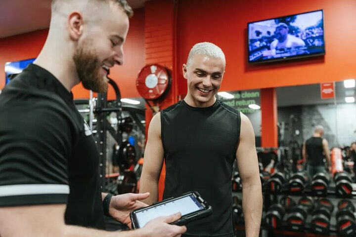
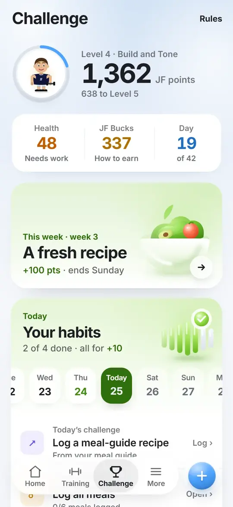
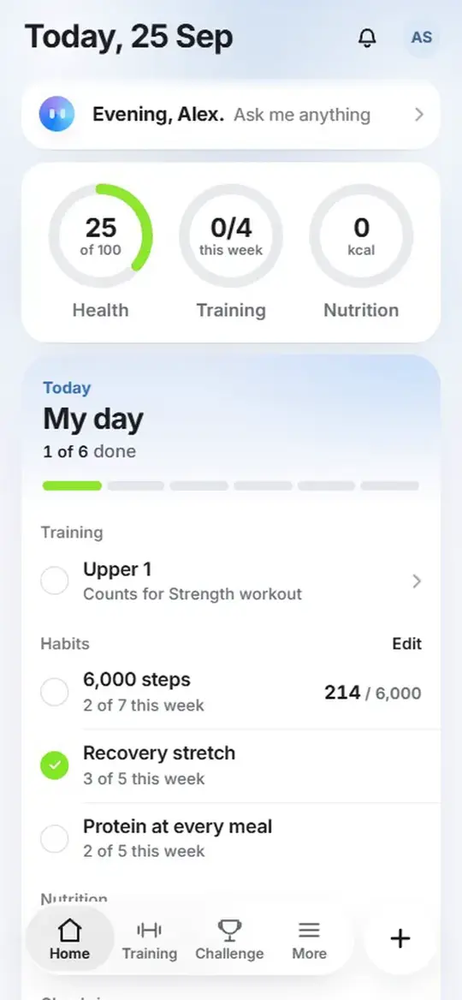
- Monday feed post
- The Spring Kickstart announcement post. Check: fix the start-date wording first.
- Friday carousel
What you actually get
: daily plan, meal guide, gym or home.
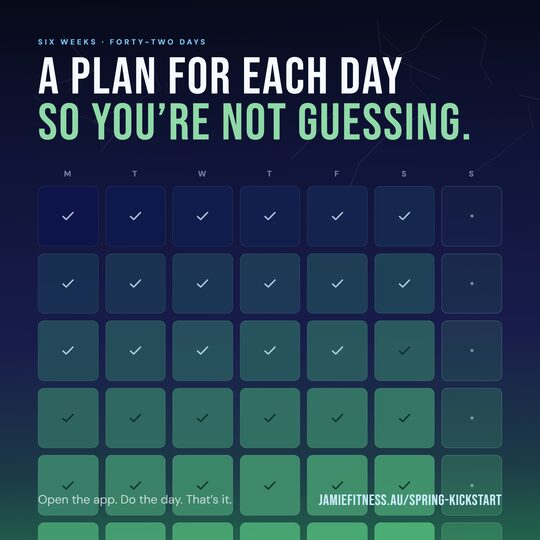
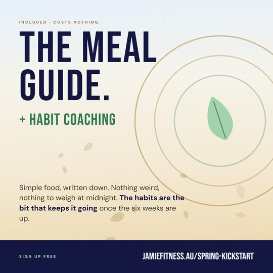
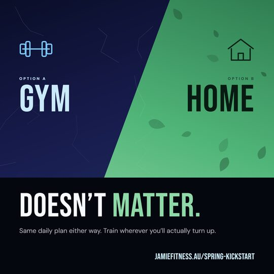
- DM keyword
- SPRING plus their suburb, from Stories.
- Trainer action
- Finn personalises story template A and the name badge story for Footscray.
Week 2: Find your rhythm
Mon 12 to Sun 18 October
Help people find their rhythm, then keep showing up from Thursday 15 October.
- Tuesday Reel
- Hook:
Your training days can fit your week.
Film Nabiha introducing Ashburton and demonstrating one exercise, then show the workout recording. Caption: Choose training days you can return to.
Post it as a Collab with Nabiha.
Check: Nabiha's handle, and that she accepts the Collab.
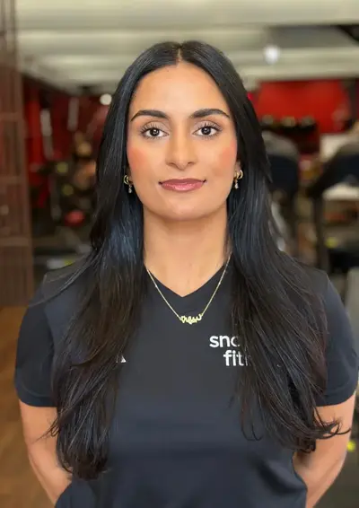
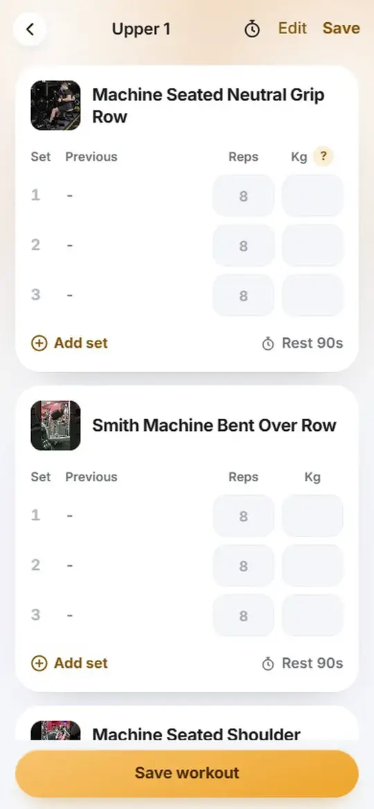
- Monday feed post
Never trained before?
- Friday carousel
- Daily plan plus
You only race yourself
, with the missed-day answer: Miss one and nothing resets.
- DM keyword
- SPRING plus their suburb, from Stories.
- Trainer action
- Nabiha shares the trainer-pack “never trained” post, naming her two gyms: Ashburton and Chelsea Heights.
Week 3: Keep showing up
Mon 19 to Sun 25 October
Help people keep showing up, then notice their progress from Thursday 22 October.
- Tuesday Reel
- Hook:
You only race yourself.
Shots: the race-yourself post, the habits and leaderboard recordings, then a progress screen. Caption: Your progress starts from your baseline.
Run it as a Trial Reel, check it after 24 hours, then share it if it brings relevant enquiries.
Unverified: Trial Reels access on your account.
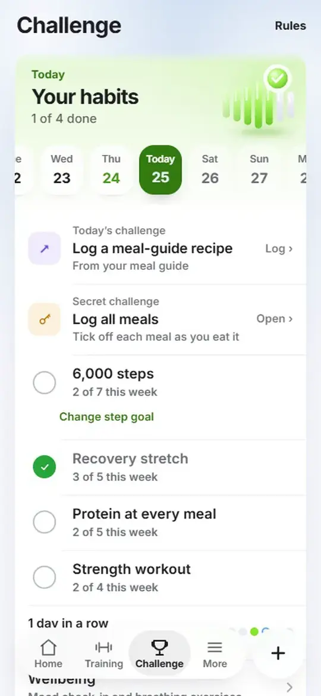
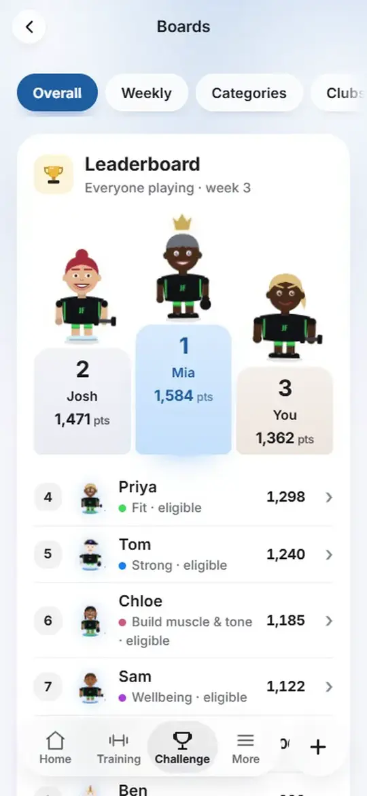
- Monday feed post
You only race yourself.
- Friday carousel
- Mohammed and Ganga, keeping their timeframes and “Personal training clients” on every slide.
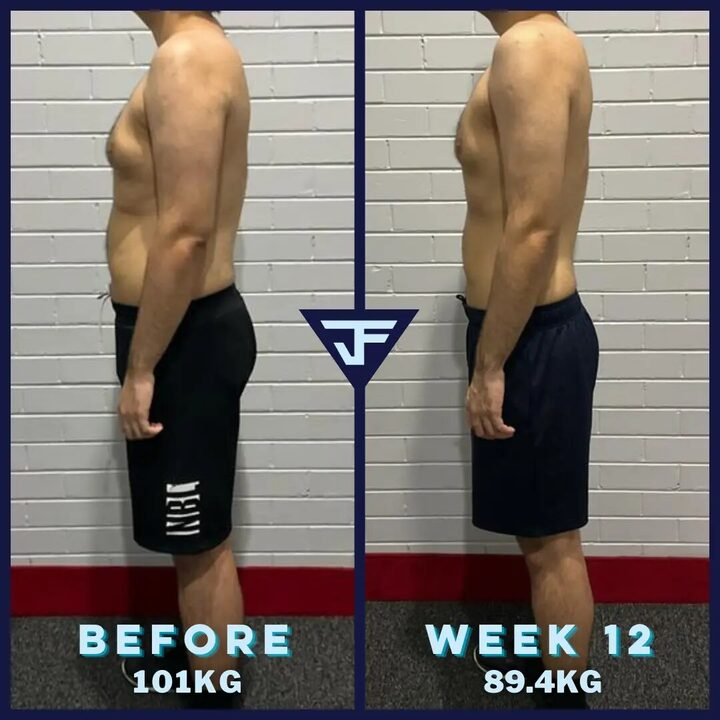
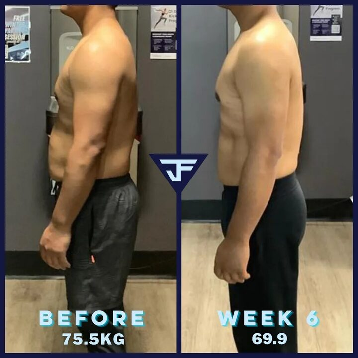
- DM keyword
- SPRING plus their suburb, from Stories.
- Trainer action
- Emma uses story template B to invite a habit check-in at Botanic Ridge and Lynbrook.
Check: Wednesday's Story uses only the quest showing in the app that week. Its details need confirming.
Week 4: Notice your progress
Mon 26 October to Sun 1 November
Help people notice their progress through Wednesday. From 29 October, keep reviewing the habits worth keeping.
- Tuesday Reel
- Hook:
What feels easier than three weeks ago?
Film Ida at Glenmore Park, add the progress screen, finish on her portrait. Caption: Notice the habits you want to keep.
Post it as a Collab with Ida. Don't invent participant outcomes.
Unverified: a clickable Reel link through Max.
- Monday carousel
- Three new cards: John's consistency quote, Andrea's six-week strength and confidence result (labelled “Personal training clients”), and a baseline reflection prompt.
- Friday feed post
- Adapt the call-to-action post into
Ask about your next step
. No last-chance claims.
- DM keyword
- SPRING plus their suburb, from Stories.
- Trainer action
- Ida personalises the “Comment KICKSTART” post only if entry is still open. Otherwise she uses story template C for questions.
Check: the official theme from 29 October.
Your weekly DM flow
Once entry is confirmed, use “Comment KICKSTART” in captions or “DM SPRING” in Stories. Reply by hand: Which suburb are you in, and which goal interests you?
Match them to their local coach, then send the joining link: Use the same email in JF Coach, then choose your goal.
A comment isn't a registration. Record the source, suburb, link sent and confirmed registration separately, and follow up once with permission. Don't promise instant automated replies, or vacancies, prizes or late access that aren't confirmed.
Your day-by-day Stories